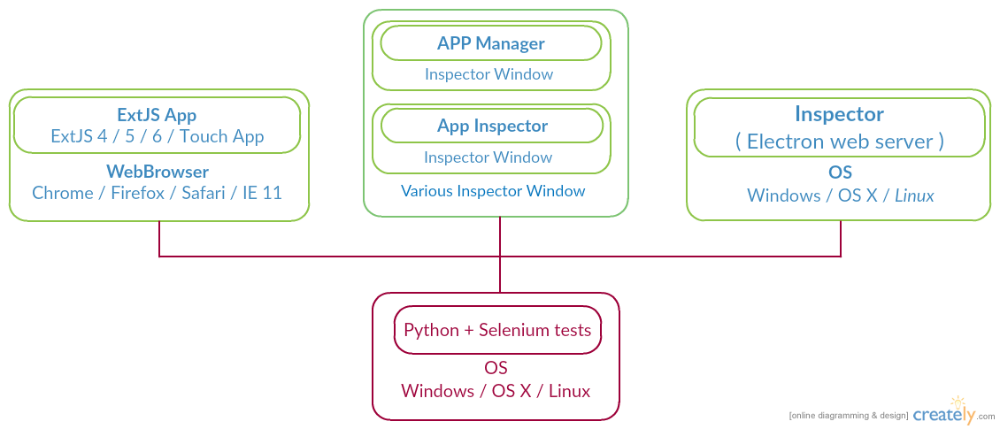

Inspector automation
Automated tests for Inspector UI
Sencha QA demo
Created by Filip Vavera <filip.vavera@profiq.com> and Petr Večeřa <petr.vecera@profiq.com>
What is goal?
- To have automated tests for Inspector
- Automatically test as much as possible
- Run tests on all supported platforms
- ...speed up regression testing process!
Sencha Inspector
- Allow us to Inspect ExtJS / Touch Apps
- Component overview
- Event viewer
- Layout Runs
- Stores explorer
- App details and App Architecture
- Brings special features such as
- SWAM Secure SQL DB Explorer
- ExtJS 6 live theming
- Can be run on Windows, OS X, Linux (planned)
- Can inspect apps in all supported browsers by ExtJS
Architecture
How it works
How is it developed
- Developed in python 2.7 - works on every system
- Developed with Selenium framework
- Using python library
unittest - Separate package for framework and tests
- Every test is standalone and can be run separately
- Delete settings and license file
- We can connect various ExtJS apps
-
We can simultaneously control both
inspector and inspected app
Already Automated
- Whole logging process
- Login UI
- All possible user accounts (valid, trial, invalid, expired etc)
- Settings
- Settings UI
- Changing ports
- Changing protocol (https)
- Connecting the multiple Apps (deprecated)
- App Inspector Interface (deprecated)
- Store Tests (deprecated)
Integration
- Integrated TestRail results (depracted)
Next steps
- Planning to integrate with TRR
- Automate up to 80% of the test cases
- Continuous integration (long term )